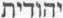
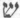
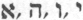
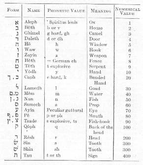
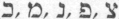
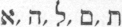
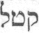
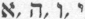

|
| A B C D E F G H I J K L M N O P Q R S T U V W X Y Z |
Hebrew was the language spoken by the ancient Israelites, and in which were composed nearly all of the books of the Old Testament. The name Hebrew as applied to the language is quite recent in Biblical usage, occurring for the first time in the Greek prologue of Ecclesiasticus, about 130 B.C. (hebraisti, rendered by the Vulgate verba hebraica). In Isaiah 19:18, it is designated as the "language of Chanaan". In other passages (2 Kings 17:26; Isaiah 36:11; Nehemiah 13:24) it is referred to adverbially as the "Jews' language" (, ioudaisti, judaice). In later times the term "sacred language" was sometimes employed by the Jews to designate the Bible Hebrew in opposition to the "profane language", i.e. the Aramaean dialects which eventually usurped the place of the other as a spoken language. In New-Testament usage the current Aramaic of the time is frequently called Hebrew (hebrais dialektos, Acts 21:40; 22:2; 26:14), not in the strict sense of the word, but because it was the dialect in use among the Jews of Palestine. Among Biblical scholars the language of the Old Testament is sometimes termed "ancient" or "classical" Hebrew in opposition to the neo-Hebrew of the Mishna. With the exception of a few fragments, viz. one verse of Jeremias (x, 11), some chapters of Daniel (ii, 4b-vii, 28) and Esdras (Ezra 4:8-6:18; 7:26), which are in Aramaic, all the protocanonical books of the Old Testament are written in Hebrew. The same is true also of some of the deuterocanonical books or fragments (concerning Sirach there is no longer any doubt, and there is a fair probability with regard to Daniel 3:24-90; 13; 14; and 1 Maccabees) and likewise some of the Apocrypha, e.g. the Book of Henoch, the Psalms of Solomon, etc. apart from these writings no written documents of the Hebrew language have come down to us except a few meagre inscriptions, e.g. that of Siloe discovered in Jerusalem in 1880, and belonging to the eighth century B.C. a score of seals dating from before the Captivity and containing scarcely anything but proper names, and finally a few coins belonging to the period of the Machabees.
Hebrew belongs to the great Semitic family of languages, the geographical location of which is principally in South-Western Asia, extending from the Mediterranean to the mountains east of the valley of the Euphrates, and from the mountains of Armenia on the north to the southern extremity of the Arabian Peninsula. The migrations of the southern Arabs carried at an early date a branch of the Semitic languages into Abyssinia, and in like manner the commercial enterprise of the Phoenicians caused Semitic colonies to be established along the northern coast of Africa and on some of the islands of the Mediterranean.
The Semitic languages may be divided geographically into four groups, viz. the southern: Arabic and Ethiopic; the northern, embracing the various Aramaen dialects; the eastern or Assyro-Babylonian; and the central or Chanaanitish, to which belong, together with Phoenician Moabitic, and other dialects, the ancient Hebrew and its later offshoots, neo-Hebrew and Rabbinic.
The Hebrew alphabet comprises twenty two letters, but as one of these () is used to represent a twofold sound, there are equivalently twenty-three. These letters are all consonants, though a few of them () have secondary vowel values analogously with our w and y. From the writing found on pre-Exilic monuments, as well as from other indications, it is clear that in the earlier period of the history of the language the Hebrew letters were quite different in form from those with which we are now familiar, and whose use probably goes back to the close of the Captivity. The accompanying schema exhibits the letters of the alphabet in the current, so-called square, form, together with their approximate phonetic values, their names and probable signification and their value as numerals.

It will be noticed that five of the letters () have a different form when they stand at the end of a word, and that the letter Shin differs from Sin only by the position of the diacritical point. Hebrew, like Arabic and Syriac, is written from right to left. Words are never divided at the end of a line, the scribes preferring either to leave a blank space or to stretch out certain letters (, hence called dilatable) in order to fill out the line. Among the essential characteristics which Hebrew has in common with the other Semitic languages is the preponderating importance of the consonants over the vowels. Indeed so inferior was the role of the latter that originally, and so long as Hebrew remained a living language, no provision was made for the writing of the vowels other than by a sparing use of the four weak consonants above mentioned, which were occasionally employed to remove ambiguity by indicating certain vowel sounds. In Semitic generally the role of the vowels is quite secondary, viz. to modify the root idea expressed by the consonants, generally three in number, and indicate some of its derived meanings. For instance, the consonantal root , qtl, represents the notion of killing or smiting, and the varying vowels that may be associated with the consonants serve only to indicate different aspects of this signification; thus: qátal, "he killed"; qetól, "to kill"; qotel, active participle, "slaying", "slayer"; qatûl, passive participle, "slain", etc. This explains why the alphabet and writing of the ancient Hebrews, as well as those of the later Syrians and Arabs, consisted only of consonants, the educated reader being able to determine through practice, and from the general sense of the passage. The proper vowels to be supplied for each word. After the Christian Era, when, through the final dispersion of the Jews and the destruction of their centre of religious worship, Hebrew was becoming more and more a dead language, and the danger of losing the traditional pronunciation and readings was correspondingly increased, the rabbis realized the absolute necessity of making a more adequate provision for the indication and fixing of the vowel sounds, and this in time led to the painstaking elaboration of the vowel system which is known as the work of the Massoretes.
The vowels, five in number (a, e, e, o, u), each of which may be short or long, are indicated by means of dots or dashes placed either above or below the consonants, and, particularly for the long vowels, in conjunction with one of the weak letters. Besides these full vowels, there are also four half vowels or shewas, indicated likewise by combinations of dots and dashes, and representing very short vowel sounds, e.g. like that contained in the first syllable of the English word before. This rather minute analysis and puzzling notation of the vowel sounds is due to the fact that the Massoretes were anxious to indicate and fix, not the conversational pronunciation of the language, but rather the traditional and distinctly articulated enunciation employed in the public reading of the Old Testament in the synagogues As in the case of all languages, this solemn and emphatic mode of utterance involved distinctions and shades of sound that were doubtless overlooked in everyday conversation. Many other signs generally called "accents" were added by the subtle and painstaking Massoretes. Some of them determine with greater precision the pronunciation of certain consonants; others (the accents properly so called) indicate the tone syllable in each word, and, besides, serve to indicate pauses and also the logical connection between words and clauses. Still another function of this complicated system of accents was to serve as a musical notation governing the modulations of the liturgical chant in the service of the synagogue. The tone accent in Hebrew words is ordinarily on the last syllable; sometimes it falls on the penult, but never on the antepenult.
The vocabulary of the Hebrew language as known to us is quite small, and there is also a dearth of grammatical forms, especially when comparison is made in this twofold respect with the marvellous richness of the sister Semetic tongue, Arabic. But we are justified in assuming that to the living Hebrew belonged many words and forms that never found a place in the writings of the Old Testament. As a matter of fact, lexicographers count only about 2050 root words, and of these a large number occur only seldom in the Bible, or have little importance in the formation of derivatives. It is generally claimed that a knowledge of 500 roots is a sufficient equipment for the reading of most of the Old Testament texts, and the total number of words in the language as preserved in the Bible is estimated at about 5000. There is an abundance of Hebrew terms to express the things that belong to everyday life-domestic animals and utensils, phenomena and actions that are of common occurrence, ordinary social relations, etc., and in particular to express the acts and objects pertaining to religious life and worship. But the Hebrew vocabulary is notably wanting when considered from the philosophical and psychological standpoint, there being few terms for the expression of abstract ideas or the sentiments of the soul. In such matters there is little evidence of psychological analysis or logical precision. Thus in the Old Testament, which is eminently a religious monument, there appears no abstract term corresponding to what we call "religion", the idea being rather inadequately rendered by the words, "fear of the Lord". There are words for love and hate, but no intermediary term to express the idea of simple preference. Hence the surprising harshness of certain expressions found even in the Gospels, which, though written in Greek, often exhibit the limitations of the Hebrew idiom in which the Evangelists thought. Such, for instance, is the passage (Luke 14:26): "If any man come to me, and hate not his father, and mother, and wife and children, and brethren, and sisters. . .he cannot be my disciple". In like manner the terms used in referring to the supposed organic seat of the soul's various operations are vague and give evidence of a rather crude psychological analysis. Thus the "heart", while affections are connected with the "reins" or the "liver", mercy with the "bowels" etc.
Among the structural characteristics which Hebrew possesses in common with the other Semitic languages may be mentioned the great predominance of triliteral roots, which in Hebrew constitute, with the proper vowels, words of two syllables (, qatal). True it is that many root forms exhibit only two consonants (e.g. , sab), but these are considered as contractions of original triliteral stems (e.g.  , savav), and the few quadriliteral roots that occur are almost entirely of foreign origin, or can be otherwise accounted for. Among the parts of speech the verb is of paramount importance, not only because it is the principal element in the construction of a sentence, but also for the reason that the other parts of speech, with relatively few exceptions, are derived from verbal stems. Even when certain verbs called denominative are derived from nominal stems, these latter are generally found to be radically dependent on other verbal forms. In fine, it may be noted that Hebrew syntax, like that of the Semitic languages generally, is very elementary and simple-long and involved periods or sentences being entirely foreign to either the prose or poetic writings of the Old Testament. For further discussion of the grammatical structure and peculiarities of the language the reader is referred to the standard treatises on the subject, which are very numerous.
, savav), and the few quadriliteral roots that occur are almost entirely of foreign origin, or can be otherwise accounted for. Among the parts of speech the verb is of paramount importance, not only because it is the principal element in the construction of a sentence, but also for the reason that the other parts of speech, with relatively few exceptions, are derived from verbal stems. Even when certain verbs called denominative are derived from nominal stems, these latter are generally found to be radically dependent on other verbal forms. In fine, it may be noted that Hebrew syntax, like that of the Semitic languages generally, is very elementary and simple-long and involved periods or sentences being entirely foreign to either the prose or poetic writings of the Old Testament. For further discussion of the grammatical structure and peculiarities of the language the reader is referred to the standard treatises on the subject, which are very numerous.
To construct an historical sketch of he origin and development of the Hebrew language is a task beset with much difficulty. In the first place the number of literary documents available for that purpose is very limited, being confined exclusively to the writings of the Old Testament, which doubtless represent only a portion of the Hebrew literature, and although these writings were produced at different intervals, covering a period of over a thousand years, yet there is not a little uncertainty as to the date of the various books. Moreover, in those early times the rules of grammar and orthography requisite for the stability of a language had not yet been formulated. Hence the notable divergencies that appear when the same passage happens to be reproduced in different books of the Old Testament (e.g. in 2 Samuel 22 and Psalm 17). It seems quite probable that the scribes in reproducing the older texts took the liberty of changing the archaic words and locutions into the more intelligible ones in current use, as is known to have been done with regard to the Hebrew text of Ecclesiasticus. Naturally the earlier stages of the growth of the language are the ones involved in the greatest obscurity. The convention that Hebrew was the original language bestowed upon mankind may be left out of the discussion, being based merely on pietistic a priori considerations. That it was simply a dialect belonging to the Chanaanitish group of Semitic languages is plain from its many recognized affinities with the Phoenician and Moabitic dialects, and presumably with those of Edom and Ammon (see Jeremiah 27:3). Its beginnings are consequently bound up with the origins of this group of dialects. The existence in remote antiquity of the Chanaanitish language is vouched for by conclusive monumental evidence. Thus the Tel-el-Amarna tablets bear witness that in the fifteenth century B.C. the peoples inhabiting the eastern shores of the Mediterranean, though making use of Assyrian in their official documents, employed the dialects of Chanaan in current spoken intercourse. Furthermore, the Egyptian records, some of which go back to the sixteenth century and earlier, contain words borrowed from the language of Chanaan, though it must be admitted that these loan words are more frequent in the papyri of the thirteenth and fourteenth centuries. But these documents, however ancient, do not, of course, take us back to the origin of the Chanaanitish group; its beginnings, like those of the other Semitic languages, are lost in the haze of prehistoric antiquity.
In connection with this problem scholars, assuming that some of the known Semitic languages were derived from others of the same family, have tried to discover their mutual relationships of parent stock and affiliation, to determine which was the mother tongue from which the others were derived. Thus Richard Simon accorded the honour of priority to Hebrew, but this view has now no adherents. Nor have the efforts of modern savants in this direction resulted in the general acceptance of any definite theory of derivations. Friedrich Delitzasch (The Hebrew Language Viewed in the Light of Assyrian Research) awards the priority to Assyrian, while Margoliouth (Hastings, "Dict. of the Bible", Vol III, p. 26) places in the first place, and contends that the Chanaanitish language was derived from it when already in a classical stage of development. Obviously the question does not admit of a clear and ready solution, and there seems at present to be a tendency among Semitic scholars to give up the assumption that any of the known Semitic languages were derived directly from any of the others, and to consider them rather as sister idioms, all being derived in more or less parallel lines from one original parent stock of prehistoric origin, which survives only in the elements common to the different members of the group. This view of the case would seem to be confirmed by the results of philological investigations in the field of the Indo-European languages. For a time it was thought that Sanskrit would prove to be the parent stem, but deeper research pointed rather to the existence of a prehistoric language denominated "Aryan", from which Sanskrit, as well as the others was derived. So also in the case of the Semitic tongues; they probably all go back to an original parent language spoken in a certain locality by the first ancestors of the Semitic race. They became diversified more or less rapidly and profoundly as a result of the successive migrations of the various tribes from the common centre, and according to the circumstances and conditions of the milieux into which the migrations took place. While nothing definite is known as to the precise location of the original home of the Semites, the more common opinion of scholars, based on various indications, places it somewhere on or near the borders of the Persian Gulf. From this centre migrations went forth at different epochs, and to different portions of South-Western Asia, where the tribes settled and in the course of time formed separate nations. With this political isolation and independence came also gradual deviations from the original spoken idiom, which, in the course of time became so pronounced as to constitute distinct languages. In this hypothesis it is easy to understand why there are closer resemblances between some of the Semitic tongues (e.g. Hebrew and Arabic) than between others (e.g. Hebrew and Aramaic), the difference being due to the diversity of conditions in which the respective deviations from the parent stock took place. An obvious illustration of this is furnished by a comparative study of the Romance languages, all of which represent more or less independent and parallel derivations from the parent stem, Latin. As regards the Semitic group, it is possible that certain resemblances may be due to supervening influences of a later epoch. Thus, for instance, the Chanaanitish may have been affected more or less profoundly by the official use of Assyrian during the period of the Tell-el-Amarna letters.
Nothing definite is known as to the antiquity of the primitive Semitic nucleus near the Persian Gulf, nor concerning the date of the migration of the tribes who settled in Chanaan. The Book of Genesis (xix, 37 sqq.) connects with the family of Abraham the origin of the Moabites and Ammonites. At all events, it seems probable that the migration of these tribes was anterior to the year 2000 B.C. Whether Abraham already spoke the language of Chanaan at the time of his migration thither, or whether, having first spoken Assyrian or Aramaic, he later adopted the language of the country in which he established himself, it is hard to say. But be that as it may, the language spoken by the clan of Abraham was a dialect closely akin to those of Moab, Tyre, and Sidon, and it bore a greater resemblance to Assyrian and Arabic than to Aramaic. Once formed, it seems to have been little affected by the intrusion of foreign words. Thus, notwithstanding the long sojourn in Egypt, the number of Egyptian words that have found a place in the Hebrew vocabulary is exceedingly small. The attempt on the part of some scholars to prove the existence of several Hebrew dialects has not produced any definite results. The analysis invoked to show, for instance, traces in the Biblical writings of a northern and southern dialect is so minute and subtle, and often so arbitrary, that it is not surprising to find that the conclusions arrived at by different scholars are chiefly noteworthy for their wide divergencies. On the other hand, there seems to be good ground for asserting that, anterior to the period represented by the Biblical Hebrew, the language had already passed through the vicissitudes of long development and subsequent disintegration. Among the indications upon which this contention is base may be mentioned: (1) the presence of archaic words or forms occurring especially in poetic fragments of old war songs and the like; (2) the occurrence of certain classical forms which imply the existence of previous forms long since obsolete; and (3) the fact of the analogies between Hebrew and the other Semitic tongues, from which scholars are led to infer the existence, in a more remote antiquity, of analogies closer and more numerous. Such evidences are, of course, subject to sober and cautious scrutiny, else they are liable to be made the basis of hasty and unwarrantable generalizations, but their proving force is cumulative, and they seem to indicate in the Hebrew a long process of growth and decay through which it had passed, in great part at least, before the Biblical period. In fact, it is claimed by some that the Hebrew of the Old Testament betrays evidences of as great a disintegration and departure from its assumed typical perfection as does the vulgar Arabic of today from the classical idiom of the golden literary age of Islam.
A noteworthy characteristic of the Hebrew of the Biblical period is its uniform stability. All due allowance being made for scribal alterations whereby archaic passages may have been made more intelligible to later generations, the astounding fact still remains that throughout the many centuries during which the Old-Testament writings were produced the sacred language remained almost without perceptible change-a phenomenon of fixity which has no parallel in the history of any of our Western languages. This is especially true of the period anterior to the Captivity, for that great event marks the beginning of rapid decadence. Nevertheless, though from that date onward the spoken Hebrew gave way more and more to the prevailing Aramaic, it still maintained its position as a literary language. The post-Exilic writers strove doubtless to reproduce the style and diction of their pre-Exilic models, and some of their compositions (e.g. certain psalms), though belonging to the latter part of the Jewish period, possess a literary merit scarcely surpassed by that of the best productions of the age of Ezechias, which is generally reckoned as the golden age of Hebrew letters. Not all of the writings, however, of the post-Exilic period are up to this high literary standard. Marks of decadence are already discernible in the prolixity of certain passages of Jeremias, and in the frequent occurrence of Aramaisms in the prophecies of Ezechiel. The substitution of Aramaic for Hebrew as a spoken language began with the Captivity and progressed steadily not only in Babylonia but also in Palestine. Certain parts of Daniel and of Esdras have dome down to us in Aramaic (whether they were thus originally composed is a moot question), and other books of that period though written in Hebrew, belong clearly to an epoch of literary decline. Such are Chronicles, Nehemias, Aggeus, and Malachias.
The period of transition from the spoken Hebrew to Aramaic coincided with that of the completion of the Old-Testament canon-a period of ever-increasing veneration for the Sacred Writings. From these circumstances arose in the minds of the rabbis a twofold preoccupation. As the people no longer understood the classical Hebrew, and were unable to follow the official reading of the Old Testament in the synagogues, it became necessary to translate it into the vernacular and explain it to them. It was this need that determined the translation of the Sacred Books into Greek for the use of the hellenizing Jews of Alexandria. This is the version known as the Septuagint, and its beginnings go back to the third century B.C. The same need was met in Palestine and Babylonia by the free paraphrastic translations into Aramaic known as the Targums. To these were added glosses and explanations by the rabbis, which, after having been for a time preserved by oral tradition, were later reduced to writing and incorporated in the Talmud. Another urgent need growing out of the altered circumstances was a definite fixation of the Hebrew text itself. Hitherto the work of transcribing the Sacred Books had not been performed with all the care and accuracy desirable, partly through negligence on the part of the scribes, and partly because of their tendency to elucidate obscure passages by introducing intentional simplifications. From these and other causes numerous variations had gradually crept into the codices in both public and private use, and through these differences of reading were generally confined to details of minor consequence, it is nevertheless plain, from a comparison of the Septuagint version with the fixed Masoretic text of a later age, that in many cases they seriously affected the sense. The natural course of things would be in the direction of still further divergencies, but the ever-growing veneration for the Sacred Books caused a reaction which began to be felt as early as the third century B.C. Great and ever-increasing care was henceforth taken in the copying of the Biblical manuscripts, especially those of the Torah or Pentateuch. Variant readings were gradually and systematically eliminated, and so successful were these efforts that from the second century A.D. onwards a practically complete and final unity of text was established for all the Jewish communities.
But the fixation of the consonantal text which was perfected during the Talmudic period extending from the second to the fourth century A.D., was not the only end to be attained. It was necessary also to determine and fix orthographically the traditional pronunciation of the vowels which hitherto had to be supplied from the reader's knowledge of the language, or at best were only occasionally indicated by the use of one of the weak letters (). The use of these had been introduced as early as the third century B.C., as is proved from the Septuagint version, and they were doubtless of great utility in determining grammatical forms that would otherwise remain ambiguous, but their introduction had been neither official nor uniform, being rather left to the initiative and preference of the individual scribes, whence arose a considerable diversity in different manuscripts. But aside from inconsistencies of application, the system was at best quite inadequate, as it provided for the indication of only a small number of the more important vowel sounds. Nevertheless, no systematic attempt seems to have been made to supply this deficiency until the sixth century A.D. This was the beginning of what is known as the Massoretic period in the history of the Hebrew language.
The Massoretes, so called from the Talmudic word massorah or massoreth, signifying tradition, were a body of Jewish scholars who succeeded the Talmudists, and who during the period from the sixth to the eleventh century worked out the great Massoretic system. Their object, like that of the Talmudists, was to provide means for the inviolate preservation of the traditional reading and understanding of the Old Testament text, but what was still left to oral transmission by their predecessors was now reduced to writing and incorporated into the text by means of a most elaborate and ingenious system of annotations and conventional signs. The Massoretes drew up rules for the guidance of copyists, made exhaustive statistics of verses, words, and letters contained in the Sacred Books, noted peculiar forms, etc., but the most important part of their great work was the elaboration of the vowel system whereby all ambiguousity was henceforth practically removed, at least so far as the traditional reading was concerned. So great was the veneration entertained for the consonantal text that no modification of it could be tolerated, not even to correct palpable errors-such corrections being noted in the margin, and for the same reason the vowel signs were not allowed to disturb in any way the form or position of the consonants, but were added to the text in the form of dots and dashes together with other minute arbitrary signs generally known as accents. Two parallel systems with different methods of notation were developed, one in the Western or Tiberian, the other in the Eastern or Babylonian School. The work of the former reached its culmination in the tenth century in the text of Ben Asher, and that of the Oriental School about the same time in the text of Ben Naphthali. The former became the standard text upon which all subsequent manuscripts in the West and all printed editions of the Hebrew Bible have been based. Not only is the Massoretic system a marvel of ingenuity and minute painstaking labour, but it is moreover a work which has proved of inestimable value to all subsequent generations of Biblical students. In the light of modern philological knowledge it has indeed its defects and limitations; grammarians and lexicographers have doubtless at times followed its lead with too great servility, often to the extent of accepting as normal certain forms that are nothing more than scribal errors-a fact which accounts in part of the multitude of exceptions which bewilder the student when trying to master the Hebrew grammar. But when all this is conceded, the fact remains that the Massoretic text is the only reliable foundation on which to base a serious study of the Old Testament. It is a well-recognized right of modern scholarship to question and emend many of its readings, but the text is, so to say, in possession, and it must be confessed that many of the corrections suggested by some of our modern critics are more arbitrary than scientific.
Prose literature of the historical type constitutes a large portion of the Old Testament. The history of the Jewish people with a sketch of their ancestors going back to the beginnings of the human race is related from a twofold point of view. Commonly known as the priestly and the prophetic. To the former belongs such books as Chronicles, Esdras, and Nehemias (II Esd.), and important sections of the Pentateuch. Its main characteristics are the annalistic style with precise dates, statistics, genealogies, official documents, etc., and it enters with minute detail into the religious prescriptions and ceremonies of the Law. It has the dryness of a series of legal documents, and is devoid of imagination or living descriptions of events. To the prophetic type of Hebrew prose belong large portions of the Pentateuch as well as of the succeeding books: Josue, Judges, Samuel (1 and 2 Samuel), and Kings (1 and 2 Kings). Its narratives are graphic and full of life, and they are characterized by imagination and a refined æsthetic taste. The Deuteronomic writers, and to some extent the Hebrew historiographers in general, employ the narration of historic facts chiefly as a vehicle for the conveying of prophetic and religious lessons. In like spirit, and on account of their didactic value, legends and ancient Semitic traditions and even accounts chiefly imaginary, find a place in the historical books. Other prose writings of the Old Testament, though cast in historical form, contain a large element of fiction introduced for a didactic purpose similar to the one underlying such narratives as that of the prodigal son in the New Testament. Among these writings, the chief object of which is to inculcate religious and patriotic lessons, may be mentioned Tobias, Judith, Esther, and Jonas.
The Old Testament embodies a considerable amount of poetry, most of which is religious in character. But various indications go to show that the Hebrew literature must have contained many other poetical works which unfortunately have not come down to us. Mention is occasionally made of some of these in the Sacred Writings, e.g. the Book of Yashar [II Sam. (Kings), I,18] and the Book of the Wars of Yahweh (Numbers 21:14). Besides fragments called "canticles" scattered here and there throughout the historical books [e.g. that of Jacob, Genesis 49:2-27; that of Moses, Deuteronomy 32:1-43, also 33:2-29; that of Deborah, Judges, v, 2-31; that of Anna, I Sam. (Kings), ii, 1-10, etc.], the poetical writings of the Old Testament embrace the Psalms, the Book of Job, except the prologue and the epilogue, the Canticle of Canticles, Proverbs, Ecclesiastes, Ecclesiasticus, the Lamentations of Jeremias, and considerable portions of the prophetic books. The Psalms belong chiefly to the lyric genre, Job is a religious and philosophical drama, while Proverbs, Ecclesiastes and Ecclesiasticus are collections of what is called didactic or gnomic poetry.
Apart from its sacred character, the poetry of the Old Testament possesses the highest literary merit, and there is abundant evidence of the great influence it exercised on the religious and national life of the Hebrews. Among its literary characteristics may be mentioned in the first place its naturalness and simplicity. It knows little of fixed, artificial forms, but has a natural sublimity of its own due to the loftiness of the ideas. It deals with things concrete and is essentially subjective. It re-echoes the poet's own thoughts and feelings, and sets forth the varied phases of his own experiences. To these qualities is due in great measure the influence exercised by Hebrew poetry on the Jewish people, as well as its wonderful adaptability to the needs and tastes of all classes of readers. It rarely involves anything like a logical process of reasoning, but is intuitive and sententious, expressing with authority religious and ethical truths in brief, terse, pregnant utterances having little connexion one with another save through the unity of the general theme. Another characteristic of Hebrew poetry is its realism. "The sacred writers enter into deep and intimate fellowship with external nature, the world of animal, vegetable and material forces: and by regarding them as in immediate connection with God and man, deal only with the noblest themes" (Cf. Briggs, "Gen. Introd.", p. 360). All nature is aglow with the glory of God, and at the same time it is represented as sharing in the destinies of man.
As regards literary form, Hebrew poetry takes little or no account of rhyme, and in this it differs essentially from the poetry of its sister language Arabic. It makes frequent and effective use of alliteration, assonance, and play upon words, but its main and essential characteristic is what is known as parallelism. This peculiarity, though remarked by earlier writers, was first set forth in a scientific treatise by the Anglican Bishop Lowth (De Sacrâ Poesi Hebr., 1753). Parallelism, traces of which are found likewise in the Assyrian and Babylonian hymns, consists essentially in the reiteration, in one form or another, in succeeding lines of the idea expressed in a previous one. The more common form of this reiteration is a simple repetition of the idea in more or less synonymous terms. Thus:--
(1) In thy strength, O Lord, the king shall joy;
And in thy salvation he shall rejoice--(Ps.xx,2)
(2) Let thy hand be found by all thy enemies:
Let thy right hand find out all them that hate thee--(ibid., 9)
Sometimes, especially in the gnomic poetry, the reiteration of the idea is put in the form of an antithesis, constituting what Bishop Lowth termed antithetic parallelism. Thus:--
(1) A wise son maketh the father glad:
But a foolish son is the sorrow of his mother--(Proverbs 10:1).
(2) The slothful hand hath wrought poverty:
But the hand of the industrious getteth riches--(ibid. 4).
Still another form of parallelism is the synthetic or cumulative, of which the following lines may serve as an example:--
Praise the Lord from the earth,
Ye dragons, and all ye deeps:
Fire, hail, snow, ice,
Stormy winds, which fulfil his word.--(Psalm 147:7-8).
Sometimes the thought expressed in the first verse is a figure of the truth enunciated in the second in which case the parallelism is called emblematic. Thus:
When the wood faileth, the fire shall go out:
And when the talebearer is taken away, contentions shall cease.
As coals are to burning coals, and wood to fire,
So an angry man stirreth up strife--(Proverbs 26:20-21).
For examples of other and rarer forms of parallelism such as the progressive or staircase form in which a final word or clause of one line is made the starting point of the succeeding one and so on; introverted parallelism, in which the first line corresponds with the fourth, and the second with the third, the reader is referred to special treatises (e.g.Briggs, "General Introduction", ch. xiv: "Characteristics of Biblical Poetry").
For the apocryphal works pertaining to the later Hebrew literature, see APOCRYPHA, and for the Neo-Hebrew of the Mishna and the Gemara, see TALMUD.
Although some of the Old Testament writers give etymological renderings of various proper names, no trace of grammatical or philological study of the Hebrew language appears prior to the Talmudic period. Many of the observations preserved in the Talmud have a grammatical bearing, and remarks of a similar kind are frequently met with in the commentaries of St. Jerome and the other early Christian writers. The first systematic attempts to frame the rules of Hebrew grammar were made by the Oriental Jews, chiefly of the Babylonian School. The movement began with Manahem Ben Sarouk (d. 950) and continued until the end of the twelfth century, but the results of these early efforts left much to be desired. More successful was the movement inaugurated about the same time under the influence of Arabic culture among the Jewish colonies of Spain and Northern Africa. Among the writers belonging to this school may be mentioned Jehuda Ben Koreish (880), Saadyah (d. 942), Rabbi Jonah Ben Gannah (physician of Cordova, b. about 990), first author of a Hebrew grammar and lexicon, and Juda Hayug (d. 1010). In the sixteenth century the study of Hebrew, hitherto almost exclusively confined to the Jews, was taken up by Christian scholars, and under the influence of the Protestant principle of the Bible as the sole rule of faith it received a great impetus. Prior to the Reformation Johann Reuchlin (1455-1522) and the Dominican Santes Paginus (1471-1541) had prepared the way for such scholars as the famous Johann Buxtorf (1564-1629) and his son (1599-1664). The former was appointed professor of Hebrew at Basle in 1590 and was accounted the most learned hebraist of his time. He published in 1602 a manual of Biblical Hebrew containing a grammar and a vocabulary, and in the following year a work on the Jewish Synagogue. In 1613 he brought out a lexicon of rabbinical Hebrew and its abbreviations, and in 1618 appeared his greatest work, the folio Hebrew Bible, together with the Targums and the commentaries of the rabbinical writers Ben Ezra and Rashi. Buxtorf died of the plague in 1629, leaving many important works unfinished. Some of these were completed and edited by his son Johann, who became his successor as professor of Hebrew at Basle. Another scholar of that period was Paul Buchlein (Fagius), a Bavarian (1504-49), who after having studied Hebrew under Elias Levita became professor of theology at Strasburg in 1542) In 1549 he was called to England by Cranmer and appointed professor of Hebrew at Cambridge, where he died shortly afterwards. He enjoyed a great reputation as a Hebrew scholar, and he published more than a score of works dealing chiefly with Old Testament exegesis. But the work of these and other eminent scholars of the same school was defective because based too exclusively on the principles of the Jewish grammarians, and it was to a great extent superseded in the eighteenth century by the works of such scholars as Albert Schultens of Leyden (1686-1750) and Schroder of Marburg (1721-98), who introduced new methods, notably that of comparative grammar. The nineteenth century was marked by a strong revival of Hebrew studies. The movement was begun by Wilhelm Gesenius (d.1842), whose "Thesaurus" and grammar have been the basis of all subsequent works of the kind, and continued by Bottcher (d.1863), Ewald (d. 1875), Olshausen, Stade, Konig, Bickell, etc. These scholars, profiting by the great advance in linguistic knowledge derived from the comparative study of the Indo-European languages, have introduced into the study of Hebrew a more extensive application of phonetic and other philological principles and have thus brought it nearer than did their predecessors to the realm of an exact science.
TOUZARD in VIG., "Dict. de la Bible", s.v. "Hebraique (Langue)", anexhaustive treatise, of which the foregoing is in great measure an abstract and adaptation; MARGOLIOUTH in HAST., "Dict. of the Bible", s.v. "Language of the Old Testament"; GENESIUS, "Grammar of the Hebrew Language", ed. MITCHELL (1903); VOSEN, "Rudimenta", 7th ed., tr. GABRIELS, "Rudiments of the Hebrew Grammar" (Freiburg and St. Louis, 1888); HARPER, "Elements of Hebrew Syntax" (New York, 1892); WRIGHT, "Lectures on the Comparative Grammar of the Semitic Languages" (Cambridge, 1890); BRIGGS, "General Introduction to the Study of the Holy Scripture" (New York, 1899), ch. xiii-xvii; MOULTON, "A Literary Study of the Bible"; IDEM, "A Short Introduction to the Literature of the Bible" (Boston, 1901); ABBOTT, "Life and Literature of the Ancient Hebrews" (Boston, 1901).
APA citation. (1910). Hebrew Language and Literature. In The Catholic Encyclopedia. New York: Robert Appleton Company. Retrieved April 26, 2010 from New Advent: http://www.newadvent.org/cathen/07176a.htm
MLA citation. "Hebrew Language and Literature." The Catholic Encyclopedia. Vol. 7. New York: Robert Appleton Company, 1910. 26 Apr. 2010 <http://www.newadvent.org/cathen/07176a.htm>.
Transcription. This article was transcribed for New Advent by John Looby.
Ecclesiastical approbation. Nihil Obstat. June 1, 1910. Remy Lafort, S.T.D., Censor. Imprimatur. +John Cardinal Farley, Archbishop of New York.
Contact information. The editor of New Advent is Kevin Knight. My email address is webmaster at newadvent.org. (To help fight spam, this address might change occasionally.) Regrettably, I can't reply to every letter, but I greatly appreciate your feedback — especially notifications about typographical errors and inappropriate ads.